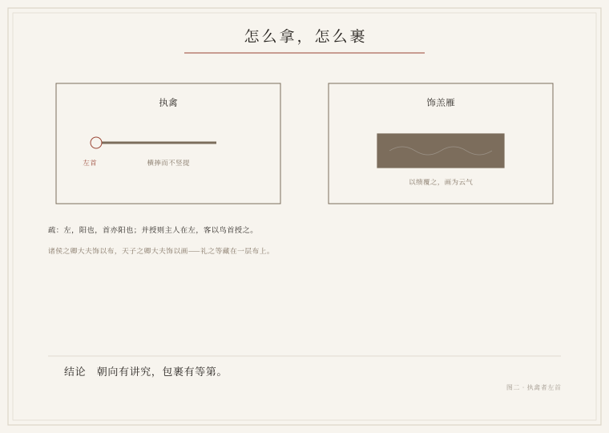

曲礼上 · 一·九十四 · 第 94 课
执禽鸟，鸟首向左；以羔雁为礼，用画布覆之。一为横捧之姿，一为饰物之法，皆相见之礼。
说什么事：执禽者左首；饰羔雁者以缋。
落在哪一层：仪。所执之向，所饰之布。
为何编在此位：上节讲牵牲，此节讲执禽与饰羔雁。皆执献之物。
【经】執禽者左首。飾羔雁者以繢。
【注】左首，尊。繢，畫也。諸侯大夫以布，天子大夫以畫。
禽 疏「禽，鸟也」。此处禽专指鸟，非禽兽之总名。
左首 疏「左，阳也，首亦阳也。左首谓横捧之也，凡鸟皆然」。横捧而使首向左。
并授则主人在左 疏「若并授，则主人在左，故客以鸟首授之也」。
饰 疏「饰，覆也」。以布覆之，为饰。
缋 注「缋，画也」；疏「画布为云气」。
以布与以画 注「诸侯大夫以布，天子大夫以画」。疏引《士相见礼》「下大夫以雁，上大夫以羔，饰之以布」，谓彼是诸侯之卿大夫，卑，但用布；此天子之卿大夫，尊，故画之。
执鸟呈人，鸟首向左横捧；以羔雁为礼，用画布覆在上面作饰。
一节两句，都在「怎么拿、怎么裹」。执禽左首，是让鸟首朝向受者之左，横捧而不竖提；饰羔雁以缋，是把礼物的面子做成一层云气。礼在物上再加一层工。
第一层 左为阳 疏以阴阳为说：左阳，首亦阳，故左首。此说未必尽合今理，然可见古人对朝向的讲究。
第二层 横捧 疏明「左首谓横捧之也」。不竖提鸟颈，是护其形，亦是不使鸟首直指人。
第三层 覆之为饰 羔雁是生礼，覆之以布，既为美观，亦为不使毛羽直视。
第四层 布与画之分 诸侯之卿大夫用布，天子之卿大夫用画。同一覆，其布之精粗随所事之朝。疏据《士相见礼》推之，可见礼之等常藏在一层布上。
与今日何干 送礼要包一层，包得素还是包得讲究，看送给谁。此节之今形，仍在礼盒上。
| 左 | 右 |
|---|---|
| 执禽 | 执鸟以献 |
| 左首 | 鸟首向左，横捧 |
| 左为阳 | 疏以阴阳为说 |
| 饰羔雁 | 以布覆之为饰 |
| 缋 | 画布为云气 |
| 布与画 | 诸侯之大夫用布，天子之大夫用画 |
画案上二物：左为一只鸟形木托（鸟首向左、身横卧、双足并拢），托下垫素布；右为两只覆布之礼器，一覆素布、一覆画有云气的布，云气以细线勾出、不填色块。不画活鸟、不写文字。赭色只在云气纹的一两道。
